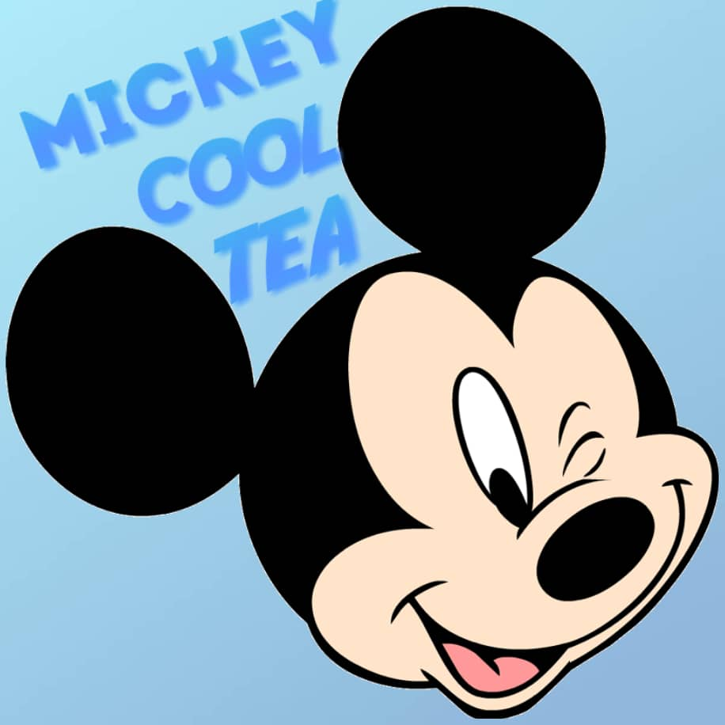

MICKEY COOL TEA

About us
An authentic Bubble Tea shop having its outlets in Kuala Lumpur and Penang. Hi, our drink call Mickey Cool Tea. Our outlet already has many years history and very popular because our bubbles are made by ourself so it will be different with anothers bubbles tea. Bubble tea can be found nationwide, but our drinks are very special. Because our drinks is smooth and rich with milk is more delicious and the milk foam is very smooth. Beside that, our drink has a strong flavor and is very authentic. Our shop's drinks have many flavour and types and the bubbles is very elasticity. It will make you endless after taste.
Find Us at
Deas Sri Hartamas (Kuala Lumpur)
No.14,Jalan 27/70A,
Desa Sri Hartamas,
50480 Kuala Lumpur.
Tanjong Tokong (Pulau Pinang)
No.125 N & O,1st Floor,
Desa Tanjung,Tanjung Tokong,
10470 Pulau Pinang.
Business hours
Monday to Friday
12:00pm - 22:00am
Saturday and Sunday
12:00pm - 00:00am
Let came join us and experince special Bubble Tea.
You also can contact us at 03-25460246